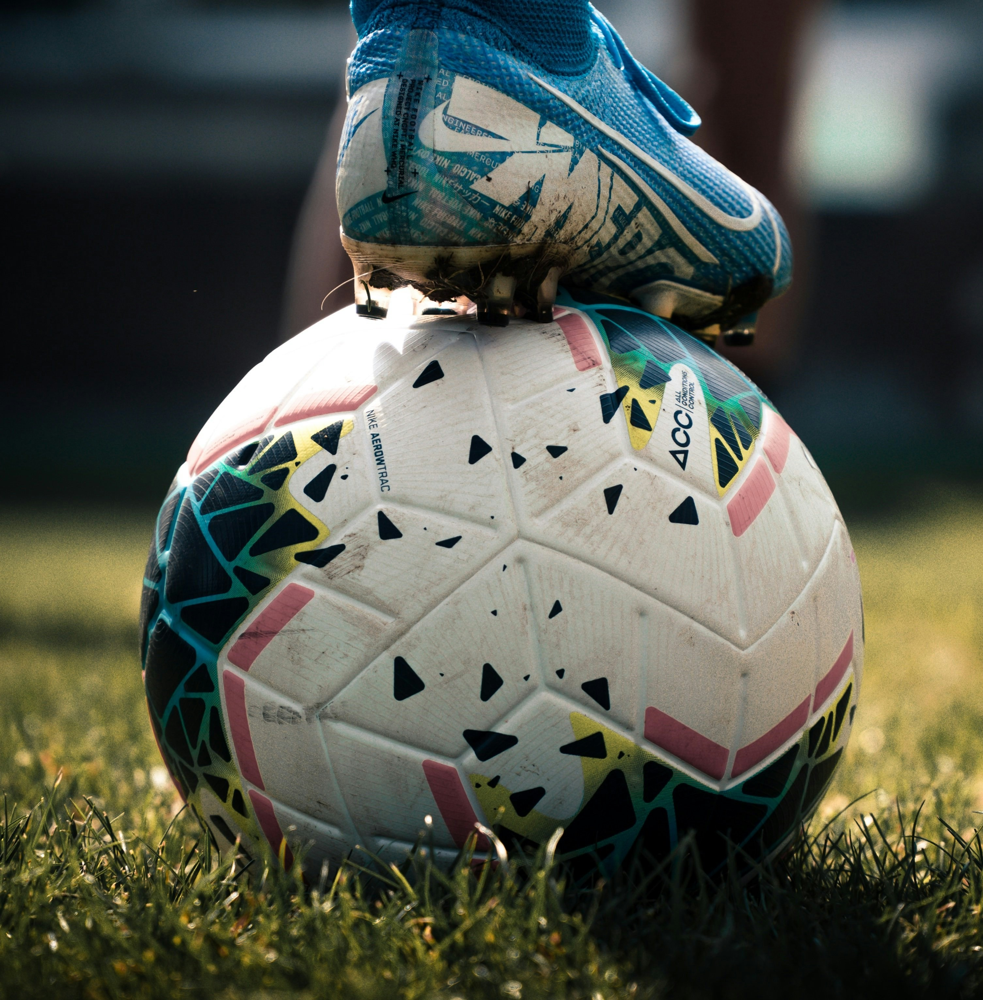
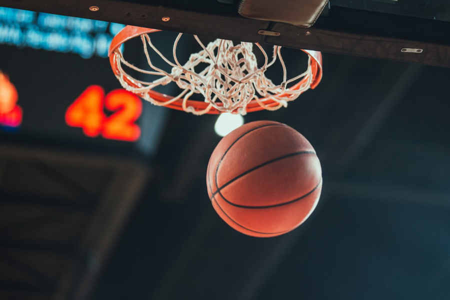
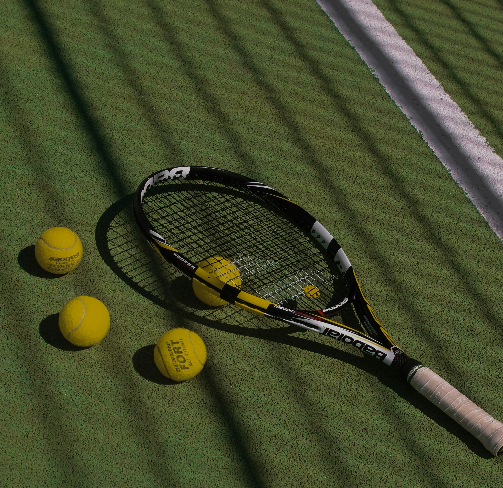
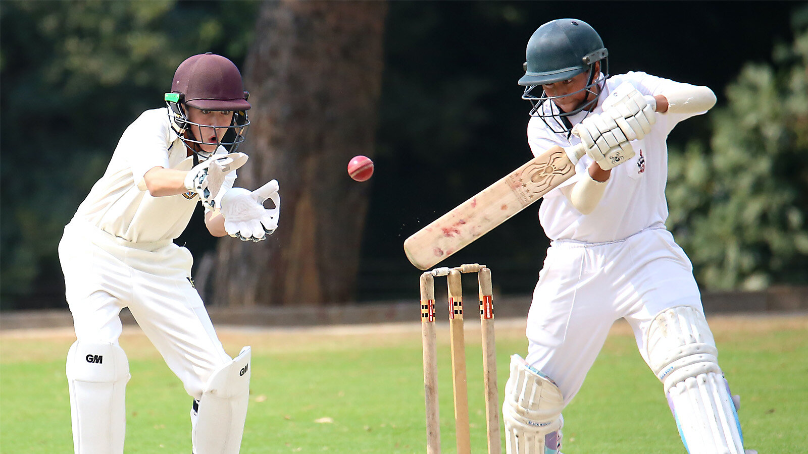
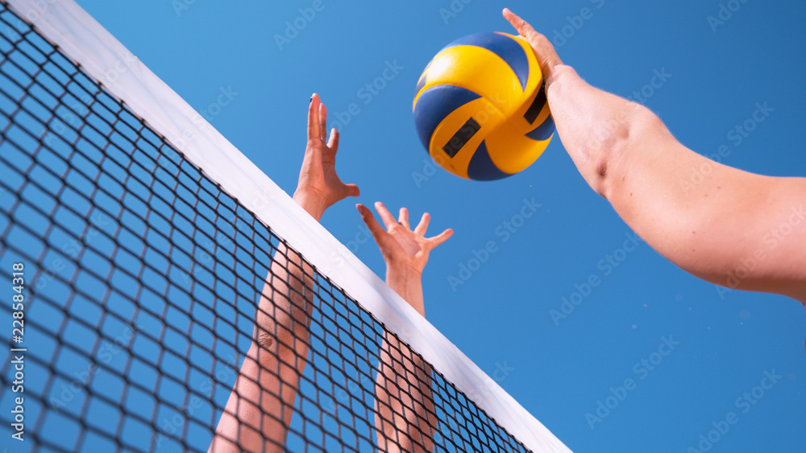

1 Football

Le football est le sport le plus populaire au monde. Il est joué dans presque tous les pays et rassemble des milliards de supporters.
Ce sport se joue avec deux équipes de 11 joueurs et un ballon rond. La Coupe du Monde est la compétition la plus célèbre du football.
- 11 joueurs par équipe
- Sport collectif
- 🏆 Coupe du Monde
2 Basketball

Le basketball est un sport très populaire, surtout aux États-Unis. Il a été créé en 1891 par James Naismith.
Deux équipes de 5 joueurs s'affrontent pour marquer des paniers. La NBA est le championnat le plus connu au monde.
- 5 joueurs par équipe
- Sport rapide et dynamique
- 🏆 NBA
3 Tennis

Les joueurs doivent envoyer la balle dans le terrain adverse à l'aide d'une raquette. Les grands tournois sont Wimbledon, Roland-Garros et l'US Open.
- Sport individuel ou en double
- Utilise une raquette
- 🏆 Wimbledon · Roland-Garros
4 Cricket

Le cricket est très populaire en Inde, au Pakistan et en Angleterre. Ce sport oppose deux équipes avec une batte et une balle.
Les joueurs doivent marquer des points appelés "runs". Les matchs de cricket peuvent durer plusieurs heures.
- Sport collectif
- Très populaire en Asie
- Utilise une batte et une balle
5 Volleyball

Le volleyball est un sport collectif joué avec un ballon et un filet. Chaque équipe doit envoyer le ballon dans le camp adverse.
Ce sport est populaire à l'école, à la plage et dans les compétitions internationales. Il demande beaucoup de rapidité et de coordination.
- 6 joueurs par équipe
- Sport collectif
- 🏖 Très populaire à la plage